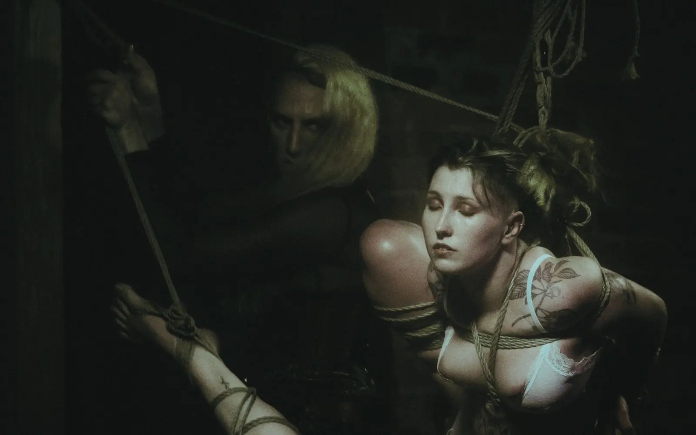
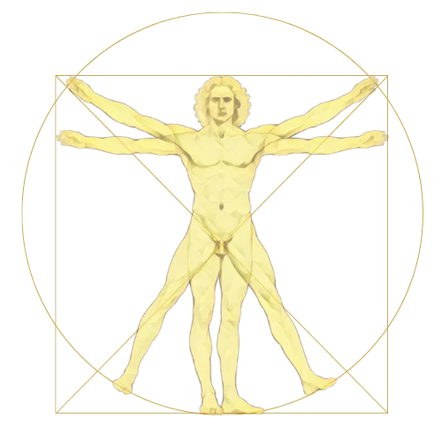
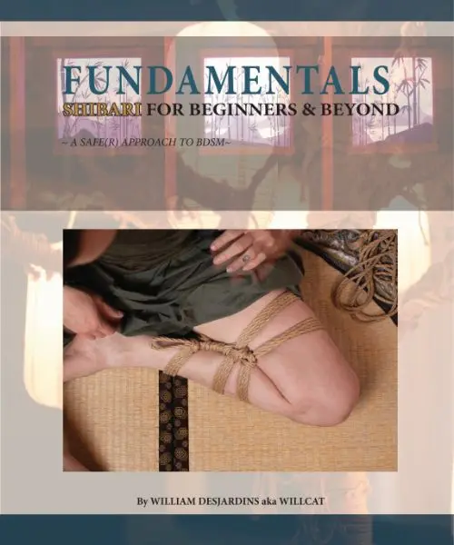
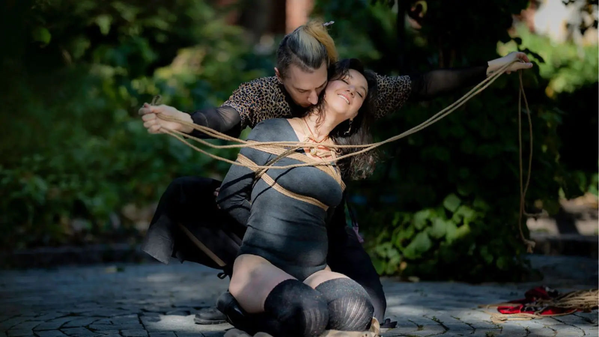
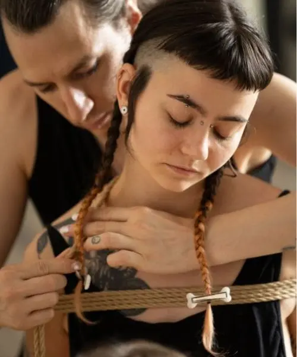
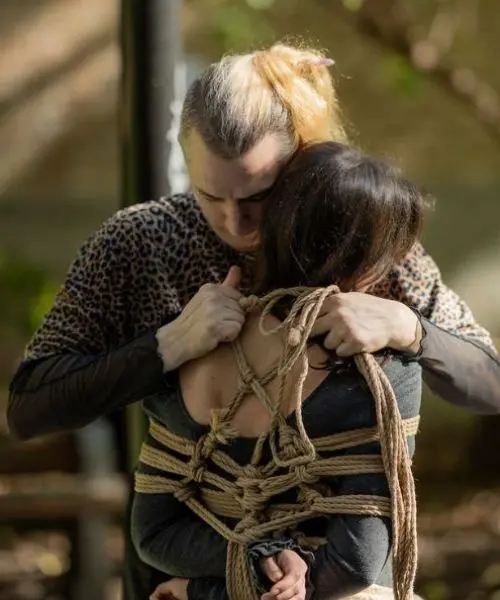
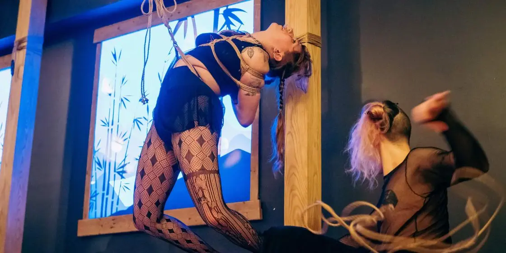
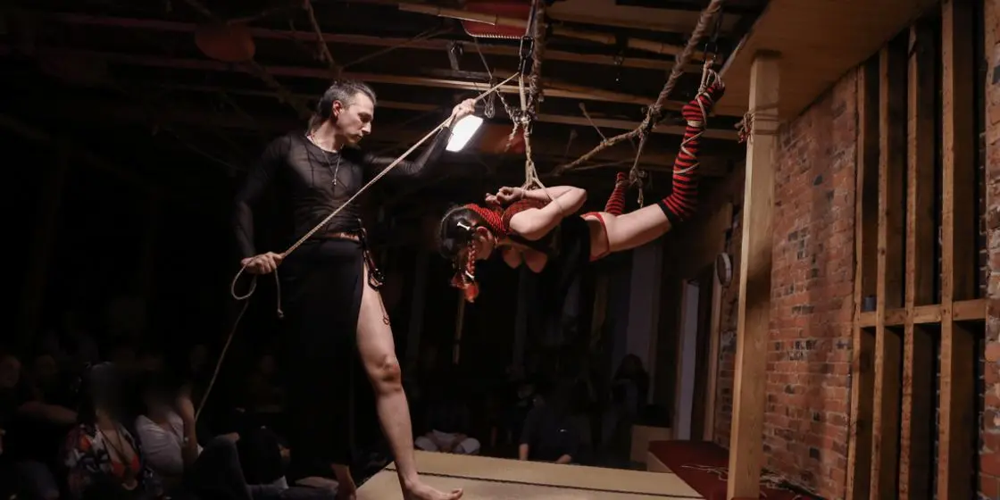
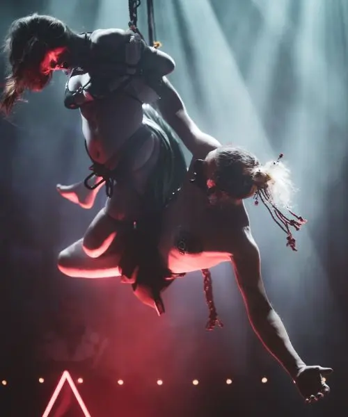

Building frameworks for understanding:
consent, body, rope, movement, and practice.
Many people come to rope the way I did; pulled in by something they can't quite name yet. A feeling, performance, scene, an image; a conversation that opened a door they didn't know was there.
And then the rope is in your hands, or on you, and it is nothing like you imagined. It is harder. More technical. More intimate. More demanding of your attention than anything warned you it would be.
That gap, between what drew you here and what it actually asks of you; is not a problem to solve. It is the beginning of a practice.
I learned rope in that gap. Found my way through it with some guidance, some luck, and a stubborn decision to do better by others than the learning curve had done by me. That decision became a curriculum. The curriculum became a studio. The studio became a community. And the community keeps becoming, through some stubbornness, something none of us fully planned.
You don't have to always know where you are going. The shape of things takes time, and sometimes changes entirely before it arrives. This page is an attempt at shifting perspectives; to have you question what you thought you knew, and sit with the questions that replace it. I hope it gives you answers. I hope it gives you more questions. Both are the point.
Don't give up. Do your best.
I can be there along your path, at least for a time...
Get you where you want to go.
William Desjardins (she/her, they/them). Fell into rope in 2014 through a Mistress, head first into kink. Started tying in 2015 and never stopped. Founder of Tension MTL, a rope studio built slowly and stubbornly in Montréal. Over 10,000 hours in. Teaching, tying, performing, making mistakes, learning from them.
Former technical training director. That background translated directly: breaking complex things into their smallest learnable components is the same skill, different material. The teaching philosophy has always been about planting seeds and watching students grow.
Teaching approach shaped by component-based martial arts pedagogy. Kenjutsu practiced seriously. Aikido explored more through reading than formal training. Not authorized in any Japanese rope tradition. Everything drawn from many sources, shaped by a decade of deliberate practice and the humility to keep questioning it.
Behind the rigging, behind the classes, behind the policies and the leader label, there is just a person doing their best not to fuck it up. Rope is edge play. Not a caveat. The foundation.
The Fundamentals are not a phase to get through. They are the whole practice, revisited at every level.
When philosophy matters.
Not rules to follow but lenses to see through.
These philosophies shaped me but they are not rules, only companions; concepts that have walked with me. They remind us that rope is more than just tying bodies and that mastery should never be the goal. The path is what counts, be in the moment; the person, not the destination.
Rope should be done with feeling; it's not all about the rope. Shibari or Kinbaku, depending on who you ask, is characterized by these three ingredients:
Above all, do not forget to have fun.
Every angle, tension, and line is intentional. Beauty is not decoration. It is structure made visible. Rope that looks right usually is right.
Why are you tying? The answer shapes everything. Rope without purpose is just knots. Intention transforms technique into something that goes beyond just macramé.
Rope should be a dialogue between partners, not a monologue. Learning to listen with your hands, responding to micro-movements, separates craft from art.
"Eventually everything will be understood."
These symbols hang above the Kamiza at Tension.
As an invitation to ask questions and contemplate; a reminder that our actions in rope should be slower, methodical and practiced.
Originally the three pillars — Aesthetics, Purpose, Connection — were enough to orient a beginner. But the deeper the practice went, the more a larger framework was needed. One that could hold technique, transmission, and community at the same time.
Maru Sankaku Shikaku: Circle, Triangle, Square. An ancient teaching from Zen and Japanese martial arts, brought into a contemporary practice. Not as philosophy for its own sake but as a working tool for understanding body, rope, movement, and relationship.
The Universe. Three shapes that contain everything. At Tension, the symbols 〇△□ hang above the Kamiza; a reminder that every action in rope is a choice navigated through rigidity, technique, and how we hold safety together.
The square holds. The triangle chooses. The circle returns.
The square holds. It is the container: the form, the frame, the kata repeated until reliable. Without the square, there is nothing to push against and nowhere to return.
The triangle is the moment of decision, where forces meet and something must give. Every transition is a triangle. You choose a direction, apply tension, and there are consequences.
The circle has no beginning and no end. In rope it is the return: to fundamentals, to humility, to practice. Every teacher was once a beginner. The community is circular.
The rope's form, safety prerequisites, the pattern practiced until second nature.
The load decision, emotional charge, choosing to add or release pressure.
Sensitivity to the body receiving rope, adapting when anatomy, breath, or energy shifts.
Curriculum sequence, prerequisites, repeatable components taught consistently.
The challenge placed on a student at the right moment, not too soon, not too late.
Reading the room, following what the student is actually learning.
Agreements, policies, accountability frameworks, boundaries that protect the space.
Honest feedback, consent negotiation, the responsibility of authority.
How a community absorbs conflict, learns, adapts, and continues rather than fractures.

These shapes are not ideas to just contemplate but integrate; and that takes practice. Structure tells you what the form requires. Tension tells you what the moment demands. Flow tells you how to adapt when reality differs from the plan.
These are not sequential stages. They are simultaneous concepts found everywhere; think of the Vitruvian Man. At any moment in practice, all three are active, at all times. The question is: do any of these need your immediate active attention? Eventually they are all passively applied; we do not think when we walk; we just do, but honestly many people can go back to learning how to walk.
"In time, the rope will tie you as much as you tie it; Mastery is not the goal. Walking the path is."
"The square is not a cage.
It is the container that makes
freedom possible."
Structure is not the opposite of freedom. It is the condition of it. The square is the container. The kata. The protocol. Without the square, the circle has nothing to return to and the triangle has nothing to push against.
Westerners often want to skip as many steps as possible. "How long will it take me to get to...?" In rope, this leads to dangerous practices. People get hurt, physically and emotionally.
"The path is not something you complete. It is something you continue."
I built this curriculum because the gap in the community wasn't just technical. People were getting hurt not because they lacked enthusiasm, but because the foundations hadn't been laid honestly. The levels exist to address that. Not to gatekeep. Not to make you take my classes specifically.
I don't care where you learned. I care whether you can demonstrate the knowledge, skills, judgment, and safety foundations required for where you are at. Equivalent experience from other teachers and schools counts. You can challenge prerequisites. What I need to see is the competency, not loyalty.
What I won't do is skip the assessment entirely. Suspension and advanced load work carry enough risk that some method of confirming readiness is not optional. That isn't personal. It is the minimum standard of care I hold for everyone who works with me or alongside me.
Like martial arts belts, the rope colours at Tension are not certifications of completion. They are reminders of where you stand on your personal Dō, and an invitation to return to roots with each advancement. There is no top. Every colour eventually circles back to Beige.
Level ≠ role. Skill ≠ teaching capacity. The issue is not where you learned; it is whether you can do the thing in relative safety and if I am comfortable showing you things I will then be responsible for.
One session. One rope. You tie on yourself — so everyone is actively engaged throughout. By the end you can explore rope independently, tie basic patterns, and begin to understand what you are actually doing when you put rope on another person.
But more than the techniques — you leave knowing that there is more. That there are doors you didn't know were there. That is the point.
"Look at all of these doors that you may or may not have known were there."
Single column · Wrapping & Intention · Dressing Rope · Finger Pointing · Batten-Dome · Taiko-Dome · Kannuki · Larkshead · Takedome · Nodome · Futomomo · Body manipulation · Gote & creativity framework · Rope care · Negotiation · Aftercare · Debriefing
Core physical safety considerations · What rope can and cannot do to a body · The essentials of working with another person safely
A discourse on consent; clear, enthusiastic, revocable. The Fuck Yes standard. Opt-in negotiation. An introduction to the conversation that never ends.
The class shows you the doors. The book is some of what's behind them, reiterated and expanded. Not the ultimate guide but a foundational map of a territory you might want to return to, as you need it. Physical safety in anatomical detail. Emotional safety. Consent frameworks. Philosophy. Creativity. You won't know which paths matter until you are already on one. The book will hopefully be a resource to help you along yours.
You will eventually understand that no path is one path. It is many, walked back and forth, abandoned or well trodden, forking off here and there. Hopefully I will have made you curious enough to one day leave your own marks.

The parenthetical is not a technicality. It is the most honest thing we can say about what we are trying to build.
Safe(r) spaces require structure. We have a responsibility to hold people more accountable inside safe(r) spaces, not less. Some behaviours will get you benched or removed. Freedom does not mean freedom from consequences.
When you fuck up, own it. Listen. Repair where you can. Step back if you need to. Leadership without accountability is just ego in a shiny outfit.
Aim for Fuck Yes. Sober, informed, enthusiastic, revokable, ongoing. Negotiate honestly. Every time.
Places like Tension do not exist by magic. Show up. Help out. Pay when you can. Contribute to the culture you want to live in.
None of this is ever gates to pass through or done & done certifications. They are honest descriptions of what each stage of your practice might look and feel like. Read them and try to locate yourself. Not where you wish you were. Where you are.
Between Floorplay and Partials sits the Lab — open practice sessions where what you've learned has room to settle. Not a class. Not an assessment. A space to tie, make mistakes, ask questions, and discover what you actually retained versus what you thought you did.
The Lab exists because integration takes time that classes can't always give. The transition into uplines and load work is not a technical leap; it is a readiness question. The Lab is where information from floorplay gets integrated and extrapolated.

"Every tie is a choice.
The triangle holds or it hurts.
It should not be forced but felt."
The triangle is the moment of decision. Every tie is a choice. Why are you tying? The answer shapes everything that follows; the technique you choose, the pace you set, the attention you bring.
We need to evaluate and be reactive in every moment. Slow down pressure on harsh angles, or increase with certainty. Really feel frictions into place. Guide the pressure through triangulation, sense it in your fingertips, and ensure we don't go beyond what is tolerable.
Rope without intention is just knots. Tension without direction is just force. The triangle holds the question: what are you actually doing here, and does the person in front of you know?
The teaching at Tension runs across several paths — Floorplay, LAB, Suspension, and Nawajutsu, the martial path through rope. Each is distinct. All of them run through the same foundations and eventually reach the same conclusions.


The connection between method, craft and art.
Nawajutsu in application is drawn from multiple traditions: Hojōjutsu, Torinawajutsu, Hayanawa, Honnawa — all branches that touch on versions of Japanese martial arts of using rope to restrain a person; THIS and not "Shibari" as we refer to it today was practiced by samurai and law enforcement, at a time when handcuffs were not a thing, studied still in very select martial arts schools to this day. Preceding all of them is Torite — the art of the hand before the rope. The aggressor had to be controlled, balance broken, leverage removed, before any rope was applied. The rope was never first. None of these lineages I can speak to; yet my approach, intentions and studies are touching on depictions or versions of it.
I spent a long time arguing that Shibari should be considered like BuDō. I was wrong about the word, right about the direction. BuDō is the way of war. What I actually meant was Dō — the way. NawaDō. ShibariDō. The discipline, the practice, the path.
Nawajutsu is my attempt to build a container for that; the technical vocabulary of the martial traditions, applied to rope as I practice it, without the combat destination those traditions were designed for. I was training Kenjutsu and started noticing aspects of it bleeding into my rope work. The way I moved around a body, entered a position, exited a tie. People began asking me; "how are you doing that?" I went looking for the math of it. Through discussions with some folx and some private classes, I came to learn I was already practicing some Aikido methodology without naming it. Center mass. Triangulated weak points. Controlling through connection rather than force. I pushed into that deliberately. I tried... But I didn't want to continue in Aikido itself — I had no interest in breakfalls, throwing, or some of the combat destinations the art moves toward. Everything else was relevant. The destination wasn't. Nawajutsu became the container for what I was actually working on; the vocabulary without the application it was designed for.
This class is the subject of my own ongoing exploration. Not a finished system. Join me in it.
"Only when actually being confronted with many different feels can you do things with feeling."
This is the class where the assumption is that you want to be corrected. Things will be done to you to show you what you are doing and what needs to happen instead. I am more willing to chastise here, to make you feel the inefficiency of what you are doing rather than explain it. Tough love. The body learns faster than the head.
You can develop real sensitivity to pressure, weight, and resistance by working with many different people of varying sizes and morphologies. That is why partners rotate. Every different body breaks a different assumption.
Prerequisite: Fundamentals. Full details at Tension MTL.
All classes are taught from both ends of the rope. Technique, body mechanics, consent, and intention are not separate topics — they arrive together or not at all.
The paths through the work are different. Floorplay, suspension, Nawajutsu, emotional connection; each has its own vocabulary and its own prerequisites. What they share is the same underlying commitment: you leave understanding why, not just what.
Private lessons in person at Tension MTL or remotely. Group workshops at Tension or at your space. Touring worldwide. If you're not sure what you need, say that. It's a better starting point than pretending otherwise.
You don't always know what you need. That's fine. Tell me where you are and I'll tell you what's possible. Adaptability is the practice.
Private parties are intimate and social. Tying in a room of people who want to watch, learn, or simply be in the presence of it. The energy is different from a stage, closer, warmer, more conversational.
Extended time to go deeper, into technique, into practice, into the parts of rope that only emerge when you stop rushing. Montréal is a good city to be in for a few days.
Available for live performance, stage work, and professional production. Film, photo, video, advisory, rigging, and on-set tying.
The rate changes depending on whether a human is in the rope. Many productions opt for mannequins or objects due to liability. Both are available. Travel and prep billed at the advisory rate.
"You return to the beginning
not because you failed;
but because that is what the circle demands."
From semeru: to press forward, to apply pressure, to hold initiative before the blow lands.
In martial arts: the psychological force that precedes technique. The pressure that disrupts your opponent's confidence before you've even moved. The applied pressure through testing, feeling and disrupting balance, or before a throw.
In anime/manga, 攻め (seme) refers to the dominant partner in a relationship. "The Top" is the closest Western equivalent in our queer/BDSM vocabulary, though seme carries more of the pursuing/initiating nuance than just physical dominance.
In rope: the same principles, different materials; different potentially dangerous results.
There is a version of rope that most people see first. Clean lines. Beautiful forms. The aesthetic of it. That version is real and it has its place.
There is another version that brought me in.
I came to rope for the loss of control. Then quickly found a penchant for suffering. I identify as an exhibitionist and a masochist but pain alone doesn't do much for me. Suffering does. The anticipation of it. Being in the hands of someone who knows how to make me suffer, who wants me to suffer for them, and who is getting off on it while doing it in front of a crowd. That. All of that.
That is where I began. As Uke. As the one receiving.
It is from that place that I understand what I now apply.

Seme is not just about pain; yet it might sometimes look like that from the outside and cause much confusion.
Done right; it is the space before pressure becomes unbearable. The threshold. Sustained application of just enough: pressure, sensation, weight, restriction, to produce torment in the specific person, or people, you are with, without crossing into what they cannot hold.
That edge is not a line you cross. It is a place you do your best to inhabit, deliberately, with complete attention.
It is way more complicated than just saying "Well I'm a sadist & you agreed to pain..."
In rope; with rope, this becomes Semenawa, tormenting rope. With words; Kotobazeme, think flirting, humiliation, embarrassment or teasing. Or even Seme; the "top" who applies pressure, both psychological or physical, to the extent that is possible with that partner "uke", the one who receives. Seme in Kinbaku is not just about applying tight ropes; it is being able to understand what is, just enough. Rope not just for the aesthetics of it, or suspended for an image or end goal but for the journey of being held in sustained torment that requires absolute trust when participating in it.

The difference between Seme, torture and abuse is consent, skill, and the capacity to read another person accurately under pressure.
Not occasionally. Continuously. In real time.
For those thirsting for the extremes, the raw energies, the hentai scenes, the places where rope becomes something older and darker than the art you sometimes see today, you have your work cut out for you.
It is possible to find those willing and wanting. But the trust between you needs to grow first. And you must be confident enough to effortlessly read someone, to bring them to that precipice without letting them fall over and or into it.
That confidence does not come just from enthusiasm. It comes from thousands of hours of attention. It comes, ideally, from having been Uke yourself and knowing what it costs to be held in that place by someone who is paying attention.
The circle is not just about returning to the beginning. It is about applying what you carry back with you.
Listening with your hands. Responding to micro-movements. Adapting when the body receiving rope shifts, when the plan meets reality, when what was rehearsed gives way to what is actually happening.
Flow is not ease. It is responsiveness. The practitioner who has integrated structure and tension fully enough that they are no longer thinking about them is free to pay attention to what is more important and actually in front of them.
This work is genuinely hard. What flow as integration describes; inhabiting that threshold with complete attention, reading someone accurately under pressure, continuously, in real time, is not a skill you arrive at easily. It is a skill you practice, and practicing means getting it wrong.
Humans are biologically and psychologically built to make mistakes. That is not an excuse. It is the starting point for what comes after.
It's ok to duck up. The key is proper acknowledgment. Accept the errors, derive lessons, apologize, listen, learn, remain vigilant for potential pitfalls, and always aim to do better.
The hardest lesson: when someone feels violated, you don't get to argue their feelings away. You own your part, whether or not your intent matched their experience. Your rabbit was also a duck.
That doesn't mean every story is simple. It doesn't mean everyone gets to stay. It doesn't mean everything can be reconciled.
But it does mean: accountability matters. Listening matters. Being willing to step back, step down, pause, and re-align your compass matters.
The Circles system is a work in progress, rooted in first nations practices of accountability and repair, adapted for our reality. It exists because we believe people who make mistakes need to be guided toward doing better, and those affected need to be believed, supported, and given priority. Not dismissed.
We cannot promise to resolve every dispute. We can foster the discussion necessary for this community to keep growing in a healthy way.
Learn about the Circles systemThe path moves through, not upward. The tree at Tension continues to grow, each student a branch, each return a deepening of roots.
Every colour eventually circles back to Beige. Every advancement should reflect a revision of our roots.
"The rope will tie you as much as you tie it."

Starting to tour internationally. Teaching, on stages, in studios, in living rooms and dungeons across continents. Collaborating with artists, educators, and communities doing the same work that resonates in different contexts.
The work we do ripples and intermingles, into other communities, other studios, other practices. The circle has no end. What you build, others will build on.
The work continues because people choose to be part of it. Every class taken, every book bought, every workshop hosted keeps the studio running, the curriculum growing, and the teaching sustainable.
If you have learned from this work, in a class, from the book, from a conversation, this is how you give it back. Not as charity. As participation in something worth continuing.
Teaching, performing, consulting, collaborating. In Montréal or wherever the work takes me.
Start with an email. No forms, no intake questionnaires. Just a message about what you are looking to do and we go from there, just please be specific.